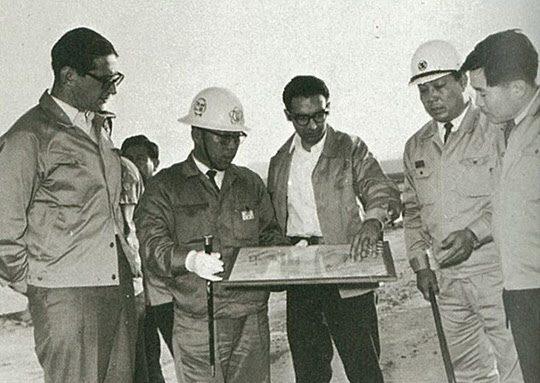
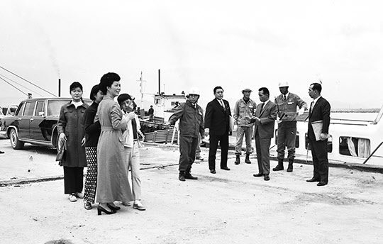

보도일 2019-10-29출처 조선일보 프리미엄조선 연재
1966년 1월 한국 대통령 박정희는 미국을 공식 방문한 기회에 다시 코퍼스사 회장 포이와 만났다. 국제차관단 구성에 속도를 내달라고 부탁하는 자리였다. 포이가 적극성을 보였다. 그래서 그해 2월 2일 한국 대통령과 경제기획원 장관의 명의로 코퍼스사에게 국제차관단 구성에 주도적 역할을 해달라고 당부하는 ‘위임 서한’을 보내게 된다. 그것은 포이가 주도하여 KISA(對韓製鐵國際借款團) 구성에 시동을 걸게 하는 키(key)와 같았다.
한일국교정상화와 베트남 파병은 1966년부터 한국의 ‘차관 조달’에 활력을 불어넣었다. 그해에 청구권자금을 지불하기 시작한 일본은 1967년까지 2년 동안 총 1억850만 달러의 민간차관을 제공한다. 한국의 대규모 베트남 파병에 답례하듯 미국이 확고한 대한(對韓) 방위 의사를 밝히자 서방국가들도 은행 금고를 열어줘서 같은 기간에 미국, 서독 등이 총 2억5610만 달러의 상업차관을 제공한다.
그러한 분위기는 한국정부의 ‘종합제철 차관’에 대한 희망을 부풀릴 만한 것이었다. 제1차 경제개발 5개년계획의 종료를 여섯 달쯤 앞둔 1966년 6월부터 정부는 종합제철소 건설계획에 속도를 올린다. 그것이 국제차관단 구성을 더 늦출 수 없다는 판단으로 이끌어간다.
1966년 5월 13일 IBRD(세계은행)의 ‘한국 50만 톤 규모 제철공장 건설에 대한 타당성을 인정한다’라는 보고서를 접수한 경제기획원이 6월 22일에는 드디어 미국의 코퍼스‧블로녹스‧웨스팅하우스, 독일의 데마그‧지멘스, 일본의 야하타제철‧히다치조선소‧미쓰비시전기공업 등 8개사 앞으로 국제차관단 구성에 관한 동의서를 발송하며, 한 달 뒤에는 불원간 구성될 국제차관단에게 종합제철소 건설 사업을 위임하겠다고 확정한다.

이때 경제기획원의 계획안은 50만톤 규모의 1차 설비를 1966년에, 같은 규모의 2차 설비를 1970년에 각각 착공하며, 외자 1억3892만5000 달러와 내자 2350만8000 달러를 조달하고, 입지 후보지는 울산 태화강 동쪽, 부산 해운대의 공업지대, 삼천포, 기타 순위로 조사한다는 내용이었다. 다만, 그 구체적 계획안에서도 여전히 변하지 않은 문제의 핵심은 ‘한국 종합제철소 건설’이 ‘외국인들의 마음먹기’에 달려 있다는 점이었다.
그런데 경제기획원이 의욕적으로 추진하는 ‘국제차관단 구성’은 그해 10월 들어서도 불투명한 상태였다. 특히, 일본이 소극적으로 나왔다. 일본은 주도권을 코퍼스사가 거머쥔 것이 불만이었다. 그때 일본 경제관료들의 분위기는 미국과 유럽의 철강업체들에 대해 비판적이었다. 불과 3년 뒤에 ‘포항종합제철 건설 타당성’을 살피기 위해 영일만 허허벌판으로 찾아오게 되는, 당시 일본 경제기획청 아카지와 쇼이치는 다음과 같은 증언을 남겼다.(허남정 지음, 『박태준이 답이다』참조)
“나는 당시 종합제철소의 건설에 어느 정도 돈이 들어가는지 짐작할 수 있었다. (코퍼스사 주도의 한국 종합제철 건설 계획안에 대해) 이 정도의 차관 규모로, 이 정도의 이자를 지불하면 불가능하다는 생각이 있었다.
그리고 종합제철소이기 때문에 고로는 이탈리아, 전로(轉爐)는 독일, 압연은 오스트리아, 미국 등 제 각각의 기술이었는데, 설비가 개별적으로는 우수할지 모르지만, 컨소시엄 형태로는 일관적인 기술 체계를 필요로 하는 종합제철소가 잘될까 하는 의문도 있었다. 그런 이유에서 일본 정부로서는 참여하기 어렵다는 뜻을 한국정부에 통보했으며 참가를 검토하던 일본의 후지제철과 야와타제철의 수뇌부에게도 정부의 뜻을 전했다.”
그러나 한국 경제기획원은 일본의 태도 변화를 기다리느라 더 꾸물댈 여유도 이유도 없다고 판단했다. 일본이 껄끄럽게 나오면 일본을 제외하고 서방 선진국들과 손을 잡아도 얼마든지 종합제철을 건설할 수 있다고 판단한 것이었다. 딱히 틀린 판단은 아니었다. 아니, 틀리지 않은 판단이었다.
‘베서머 제강법’이 증명하듯 영국은 산업혁명의 본거지답게 철강기술의 발전을 이끌어온 나라이고, 1966년에는 제철기술이나 조강능력에서 미국이 가장 앞서는 나라였다. 그러니 일본이 자존심을 내세우며 엉덩이를 뺀다고 해서 한국이 매달려야 하겠는가. 그때 국민 정서나 감정으로는 더욱 그랬다.
11월 16일 장기영 부총리가 코퍼스사 포이 회장에게 공한을 발송한다. 일본 업계의 참여를 기다리지 말고 국제적으로 공신력 있는 회사들을 망라한 국제차관단을 조기에 구성해 달라는 내용이었다. 그에 따라 포이가 미국 피츠버그에서 한국 종합제철소 건설 지원을 위한 국제차관단 구성회의를 주최하게 되었다.
코퍼스‧블로녹스‧웨스팅하우스 등 미국의 3개사, 독일의 데마크‧지멘스, 영국의 엘만, 이탈리아의 임피안티 등 4개국 7개사가 나흘간 협의 끝에 12월 20일 마침내 대한국제제철차관단(KISA : Korea International Steel Associates)을 정식으로 발족했다. 연산 조강 30만 톤짜리 울산종합제철을 무산시킨 박정희가 1965년 5월 미국 피츠버그를 방문한 날로부터 거의 19개월이 지난 때였다.
KISA 발족. 머나먼 피츠버그에서 날아온 그 소식을 한국 언론들은 ‘종합제철소 건설의 찬란한 무지개’처럼 보도했다. 그럴 만했다. 제1차 KISA회의 합의사항에는 ‘한국의 종합제철 건설을 위해 차관단이 1억 달러’를 출자하고 ‘차관단과 한국정부가 합의한 장소에 1967년 4월까지 공장 건설이 시작되게 한다’는 것이 포함되었다.
차관 1억 달러에다 1967년 4월까지 착공! 이것은 종합제철을 갈망하는 박정희와 한국 정부에게 산타의 경이로운 크리스마스 선물보다 더 기쁜 소식이었다. 단지 누구도 예리하게 주목하진 않았으나 KISA의 그 합의에는 뒷맛이 묘한 사항도 포함돼 있었다. ‘세계은행 및 IECOK(대한국제경제협의체)와는 가급적 협조하되 직접적 관련을 맺지 않는다’라는 것.
이는 KISA가 IBRD나 IECOK를 직접 설득하러 다니는 일은 없다는 뜻이었다.
1967년 1월 16일 독일 뒤스부르크에서 제2차 KISA회의가 열렸다. 프랑스의 엥시드가 추가로 참여해 KISA는 5개국 8개사가 되었다. 제철소 건설에 필요한 제반 설비의 국가별 공급내역을 할당했고, 영국은 2000만 달러 차관 제공에 대한 정부 승인을 통보했다. 이어서 코퍼스 대표단이 한국으로 들어와서 소요내자 조달 방안과 입지 후보지에 대한 타당성 조사를 실시했다.
제3차 KISA회의는 3월 13일부터 사흘간 미국 피츠버그에서 열렸다. 이 회의는 한국의 종합제철 건설에 필요한 외자 규모 1억 달러를 미국 30%, 독일 30%, 이탈리아 20%, 영국 20% 등으로 분담하기로 결정했다. 이제는 뭔가 ‘확실히’ 돼가는 분위기였다. 그러나 모호했다. 무엇보다도 ‘책임 소재’가 빠져 있었다. 제때 조달하지 못하면 누가 어떻게 책임질 것인가? 이것이 없었다. 그리고 제1차 회의 때 ‘1967년 4월까지 착공한다’고 했던 합의는 마치 자연스런 현상처럼 연기되고 말았다.
그보다 일주일 앞선 3월 7일, 한국은 관세 및 무역에 관한 협정(GATT)에 가입했다. 1995년 세계무역기구(WTO)로 대체될 때까지 세계무역 질서를 관장한 GATT. 자주와 주체를 외치는 평양 정권은 가입할 생각도 없고 가입할 방법도 없는 GATT. 여기에 세계 70번째 나라로 가입한 대한민국. 이 가난하고 조그만 신생독립의 분단국가가 세계로 진출할 그 장사의 길을 통해 민족중흥을 이룩하겠다며 주먹을 쥐고 술잔을 올렸다.
4월 6일 경제기획원에서 장기영 부총리와 KISA 대표 포이가 ‘종합제철소 건설 가협정’을 체결했다. 포이가 내놓은 예비제안서의 특징은 크게 두 가지였다.
먼저, 1차 50만 톤 규모 건설비에서 외자 소요를 2500만 달러 더 늘린 1억2500만 달러로 추정했다(그 차액 때문에 ‘기본계약’이 ‘가협정’으로 바뀌었으며, 가협정에는 ‘KISA가 제출한 사업계획에 대해 한국정부가 국제적으로 제철공장에 경험‧지식‧시설‧가격‧건설‧운영에 관하여 권위가 있고 차관공여기관이 수락할 수 있는 기술용역단을 구성하여 이를 검토한 후에 확정한다’라는 문항도 포함되었으니 2500만 달러 증액에 대해 한국정부가 얼마나 미심쩍어하고 부담스러워했는지를 짐작할 수 있다).
둘째, 차관단이 소요 외자에 대한 차관을 주선하며 조건은 연리 6%에 3년 거치 12년 상환으로 한다는 것이다. 그리고 KISA는 이미 착공 시기를 7월로 연기했는데, 어차피 종합제철 건설은 대장정이기 때문에 수개월 지연이야 아무런 문젯거리도 아니었다.

머잖아 사단이 터졌다. KISA의 소요예산 추정치는 박태준이 용역을 맡긴 일본조사단의 그것보다 너무 높았다. 단번에 100만 톤을 건설하지 않고 KISA 계획안대로 50만 톤씩 두 단계로 나눈 경우에도 일본의 것이 KISA보다 35%쯤 낮았다. 그 비교표를 받아본 한국정부는 더욱 놀랐다. 박태준이 ‘속지 않기 위한 장치’를 적기에 잘 마련해둔 것이었다.
이래서 박정희는 그에게 “계획 단계부터 직접 챙겨 보라”는 지시를 했을 것이다. 두세 달 뒤(6월 15일)에는 가협정의 그 문항에 의거해 국제연합개발계획(UNDP)이 KISA의 사업계획에 대한 기술검토에 착수했다. KISA의 계획대로 50만 톤씩 두 단계로 쪼개지 않고 단번에 100만 톤 규모로 건설하면 총공사비의 30∼35%까지 절감할 수 있다는 견해였다.
한국 언론들이 일제히 KISA의 터무니없이 높게 책정된 건설비 측정치와 차관 금리에 대해 강한 비판을 제기했다. 그러나 그때는 박정희도 한국정부도 박태준도 KISA를 내쫓을 엄두조차 내지 못했다. 마땅한 대안이 없었다. 서방 선진국 철강사들만 골라서 어렵사리 구성한 KISA를 대신할 파트너를 어느 나라에 가서 구한단 말인가? 벙어리 냉가슴이나 앓아야 했다.
KISA를 미심쩍은 시각으로 보아온 박태준은 그때부터 그들을 못마땅하게 생각했다. 그러나 그는 1967년 7월에도 종합제철 건설에 대한 공식 직위가 없었다. KISA와 공식적으로 교섭하고 협상하는 업무들을 죄다 한국 경제관료들이 맡고 있었다. 박태준은 관료들이 KISA와 손잡고 추진하는 종합제철을 지켜보느라 속을 끓이면서 믿을 만한 동지들에게는 불만을 터뜨리기도 했다.
“우리는 임해(臨海) 제철소로 가야 하는데, 미국에는 임해 제철소가 없어. 피츠버그 제철소들은 주로 펜실베이니아 탄전의 석탄을 쓰고, 슈피리어호 서쪽 호안에서 나오는 철광석을 쓰고 있어. 호주 같은 외국에서 배로 싣고 와야 하는 우리 조건과는 천양지차야. 그러니 포이가 주도해서야 기술적으로 기대할 것이 뭐가 있겠어? KISA 놈들은 장사꾼들이야.
생각이 다른 나라들, 생각이 다른 회사들이 설비나 팔아먹을 꿍꿍이속으로 국제컨소시엄이다 뭐다 해서 뭉친 거지. 그것들은 한마디로 어중이떠중이야. 까딱하면 국가의 대들보가 무너지는 수가 생겨. 그러나 지금은 어떡해? 잘 살피면서 앞으로 나가는 거지.”
1967년 늦여름에도 박태준은 ‘KISA에 대한 불만, KISA의 미심쩍은 행동에 대해 당차게 지적하고 개선하지 못하는 관료들에 대한 불만’을 가슴속에 가둬놓고는 때를 기다리고 있었다. 박태준이 기다리는 그 ‘때’란, 2년 전 초여름에 박정희가 그에게 밀지처럼 내린 특명에 어울리는 공식 직위를 부여하는 그날이었다.